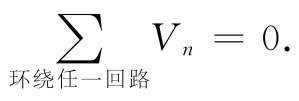
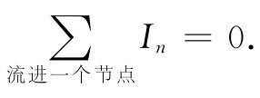

1
=0.
1
=0.就像上一节中我们曾见到的，利用元件外面所发生的事情来描述一个理想电路元件是十分简单的。电流与电压彼此线性地联系着。可是在元件内部真正发生的情况却是非常复杂的，凭借麦克斯韦方程组来给出一个精确的描述十分困难。试想象对一部含有数以百计的电阻、电容和电感的收音机里面的电场和磁场设法提供精确描述。要对这样一件事情运用麦克斯韦方程组来加以分析，那会是无法做到的。但通过做出曾在§22-2中描述过的多种近似以及对实际电路元件的基本特点用理想化的办法加以概括，对一个电路用相对直截了当的方法来分析就成为可能的了。现在我们要来说明那是怎样进行的。
图22-9 环绕任一闭合路径的电压降之和为零
设有一个电路，含有一部发电机和几个互相连接在一起的阻抗，如图22-9所示。按照我们的近似条件，在各个电路元件的外部区域并没有磁场，因此环绕任何未曾通过任何元件的曲线E的线积分为零。然后考虑由虚线所构成的曲线Γ，它完全围绕着图22-9中的电路。E环绕这一条曲线的线积分由好几部分构成，每一部分就是从一个电路元件的一端至另一端的线积分。这个线积分已被我们称为跨越该电路元件的电压降，于是整个线积分就恰好是跨越电路中所有元件的电压降之和：
∮E·ds=∑Vn .
由于这一线积分为零，所以我们得到：环绕整个电路回路的电势差之和等于零，即
 （22.14）
这一结果得自麦克斯韦方程组中的一个方程——即在没有磁场的区域里，环绕任一闭合回路E的线积分为零。
假设现在考虑一个像图22-10所示的电路。连接a，b，c和d各端点的那条水平线是为着表明这些端点都互相连接着，或者它们都是由电阻可以忽略的导线连接着。无论如何，这种画法的意思是：a，b，c及d诸端点全都处于相同的电势；同样地，e，f，g及h诸端点也都处于共同的电势。于是横跨四个元件中每一个的电压降V都相同。
图22-10 流入任一个分支点的电流之和为零
现在我们的理想化条件之一已经成为，在各阻抗的端点上所积聚起来的电荷都可以忽略。现在再进一步假定，任何连接各端点的导线上的电荷也都可以忽略。于是电荷守恒律要求，任何离开某个电路元件的电荷都应立即进入另一个电路元件。或者，也同样可以说，我们要求流入任何分支点的电流之代数和必须为零。当然，所谓分支点我们指的是诸如a，b，c，d等互相连接着的任何一组端点。像这样互相连接的一组端点我们往往称之为“节点”。于是对于图22-10的电路，电荷守恒便要求
I1 -I2 -I3 -I4 =0. （22.15）
进入由e，f，g和h四端点构成的那个节点的诸电流之和也是零：
-I1 +I2 +I3 +I4 =0. （22.16）
当然，这和式（22.15）是一样的。这两个方程并非互相独立。普遍的法则是，流进任一个节点的电流之和必须为零 。
 （22.17）
上面关于环绕一个闭合回路的电压降之和为零的结论，在一个复杂电路中必须应用于其中任一回路。并且，有关流进一个节点的电流之和为零的结果对于任何个节点也必然是正确的。这两个方程称为基尔霍夫法则 。有了这两个法则，就能够在无论任何网络中解出其中的电流和电压。
图22-11 用基尔霍夫法则来分析电路
现在假定考虑图22-11中那个更复杂的电路。在这一电路中我们将怎样找出其中的电流和电压呢？可以按照下述直截了当的办法把它们求出。分别考虑出现在该电路中的那四个附属闭合电路（例如，其中一个回路从端点a至端点b又至端点e和d而返回到端点a）。对于每一个回路，我们写出基尔霍夫法则的第一个方程——环绕每一回路的电压之和为零。必须记住：若顺着 电流的方向行进，则电压降就算作为正，但若在经过某一元件时与电流的方向相反 ，则电压降应算为负；并且还必须记住，跨越一部发电机的电压降是在该方向上电动势的负值 。这样，若我们考虑那一个从端点a出发而又结束于其上的小回路，就会得出如下方程：
z1
I1
+z3
I3
+z4
I4
-
1
=0.
应用相同的法则于其余的回路，我们便会获得三个以上同类型的方程。
其次，对于该电路中每一个节点，还必须写出电流方程。例如，对那些流入节点b的电流求和时便会给出方程
I1 -I3 -I2 =0.
同理，对那个标明为e的节点则会有电流方程
I3 -I4 +I8 -I5 =0.
图上所表示的这个电路总共有五个这样的电流方程。但是，结果证明，这些方程中的任一个都可从其他四个导出来，因此就只有四个独立的电流方程。这样，我们总共有八个独立的线性方程：四个电压方程和四个电流方程。有了这八个方程，就可以解出八个未知电流。一旦这些电流求出，该电路便算是已经解决了。跨越每个元件的电压降由流经该元件的电流乘以其阻抗而给出（或者，在有电压源的情况下，电压降是已知的）。
我们已见到，当写出电流方程时，会获得一个与其他诸方程并不独立的方程。一般也可能写下太多的电压方程。例如，在图22-11的电路中，虽然我们只考虑那四个小回路，但还有大量的其他回路，对它们也可以写出电压方程。例如，有一个沿路径abcfeda的回路，还有另一个回路是沿abcfehgda路径。你能够看出，存在许多个回路。在分析一个复杂电路时极易于得到太多的方程。有一些法则会告诉你如何处理以便仅仅写下最低限度数目的方程，但往往只要略为思考一下便能看出该怎样去得到形式最简单的适当数目的方程。而且，写出一两个超额方程也没有什么妨碍。它们将不会导致任何错误的答案，只是或许要做一些不必要的代数运算罢了。
在第1卷第25章中，我们曾经证明过，若两阻抗z1 和z2 互相串联 ，则它们等价于由下式给出的一个单独阻抗zs ：
zs =z1 +z2 . （22.18）
我们也曾证明过，若两阻抗并联 ，则它们等价于一个由下式给出的单独阻抗zp ：
你如果回顾一下就将会看到，在导出这些结果时我们实际上已应用了基尔霍夫法则。往往可以通过反复运用关于阻抗串联和并联的公式来分析一个复杂电路。例如，图22-12中的电路就是可以这样分析的。首先，z4
和z5
两阻抗可以由其并联等效阻抗来代替，而z6
和z7
两阻抗也是一样。然后，阻抗z2
可以同z6
和z7
的并联等效阻抗按串联法则结合起来。按照这样的方式进行下去，整个电路就可以简化成一部发电机同一个单独阻抗Z的串联。于是流经该发电机的电流就不过是
/Z。然后反过来进行计算，人们就能求出通过每一阻抗的电流了。
图22-12 一个可以用串联和并联组合来分析的电路
图22-13 一个不能用串联和并联组合来加以分析的电路
然而，也有一些十分简单的电路不能用这种办法来分析，图22-13所示的电路就是一个例子。要分析这个电路，一定要按照基尔霍夫法则写出电流和电压的方程。让我们来做一做吧。这里只有一个电流方程：
I1 +I2 +I3 =0，
因而我们立即知道
I3 =-（I1 +I2 ）.
如果马上利用这一结果写出电压方程，便能节省一些代数运算。对于这个电路存在两个独立的电压方程，它们是
-
1
+I2
z2
-I1
z1
=0
和
2
-（I1
+I2
）z3
-I2
z2
=0.
这里有两个方程和两个未知的电流。对这两个方程解出I1 和I2 ，便得
第三个电流可从这两个电流之和获得。
另一个不能利用阻抗的串联和并联法则加以分析的电路例子如图22-14所示。像这样的电路称为“电桥”，它出现在许多用来测量阻抗的仪器中。对这一电路人们感兴趣的问题往往是：各阻抗必须怎样联系，才能使通过阻抗Z3 的电流为零。符合这一要求的条件将留给你们去找。
图22-14 一个桥式电路